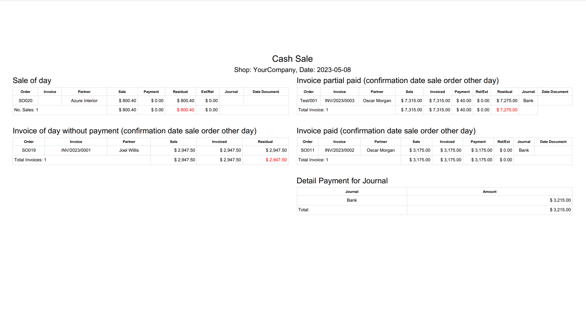
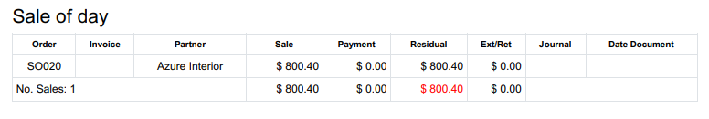
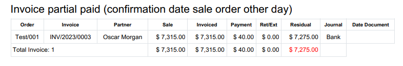
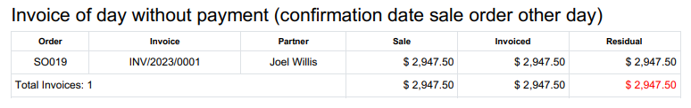
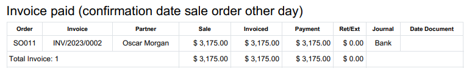
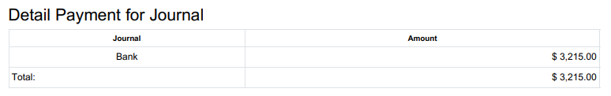

Translated languages


This module helps us to have a report of the payments generated on a certain date, showing us the status of sales or invoices on said date, all this is generated by means of sql query, therefore it is fast compared to native searches.
From the sales module, we will observe the Cash Sale menu item, clicking on it will redirect us to a pop-up window where we will establish the date, the billing journals and the company.
Clicking the PDF button will generate a document in PDF format where we can see the following data:
It will show us the confirmed sales on the search date, with their respective advances, invoices and invoice payments, as well as withholding and tax exemption payments.
Open invoices with payment(s) on the search date, these invoices are related to a confirmed sale prior to the search date.
Open invoices without payments, with invoice date equal to the search date, these invoices are related to a confirmed sale prior to the search date.
Paid invoices, whose last payment is equal to the search date, these invoices are related to a confirmed sale prior to the search date.
The detail of the amount of payments of the search date grouped by your journal.
Add the date of the payment document to the payment level, to differentiate when you receive it in Odoo and when it was generated in the bank.
Add the detail at the invoice level of the date of the last payment.
Add in the cash journals the check of whether it is a payment method to reduce the withholding or tax exemption.